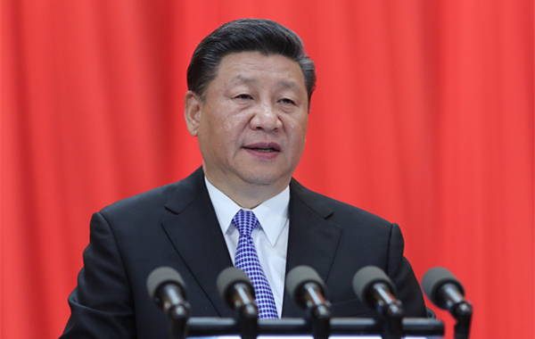

5月4日，纪念马克思诞辰200周年大会在人民大会堂举行。中共中央总书记、国家主席、中央军委主席习近平出席大会并发表重要讲话。“高层声音”带您聆听现场。
>>>点击进入“高层声音”
-
马克思毕生忘我工作，经常每天工作16个小时
“马克思毕生忘我工作，经常每天工作16个小时。马克思在给友人的信中谈到，为了《资本论》的写作，“我一直在坟墓的边缘徘徊。因此，我不得不利用我还能工作的每时每刻来完成我的著作”。即使在多病的晚年，马克思仍然不断迈向新的科学领域和目标，写下了数量庞大的历史学、人类学、数学等学科笔记。”